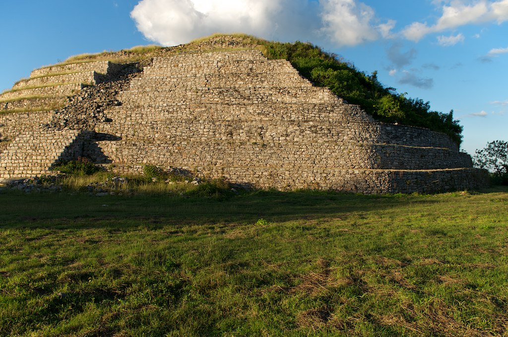

Izamal
Izamal, Yucatán
El sitio se localiza a 72 kilómetros de la Ciudad de Mérida, Yucatán, desde donde se toma la Carretera Federal No. 180,
hacia Cancún hasta llegar al poblado de Hoctun donde hay un libramiento que conduce a Izamal.
Otra forma de llegar es por medio de una carretera angosta desde la población de Tixkokob pasando por Euan, Cacalchén y Citilcum;
desde este último punto parte una carretera más amplia hacia Izamal.
Al llegar a la ciudad habrá que tomar la calle 28 que se localiza en la parte posterior del Convento después de rodearlo, al fondo,
se alcanza a ver la Pirámide denominada “El Kinich Kak Moo”, la cual está circundada por la traza urbana (calles 27 y 29).
Las otras estructuras se encuentran igualmente ocupando algunos predios de la población;
las que están abiertas al público son “El Itzamatul”, “El Conejo” y el “Habuc”, así como el convento de San Antonio de Padua,
edificado sobre un basamento prehispánico llamado Ppap Hol Chak.
Costo por accesso: No